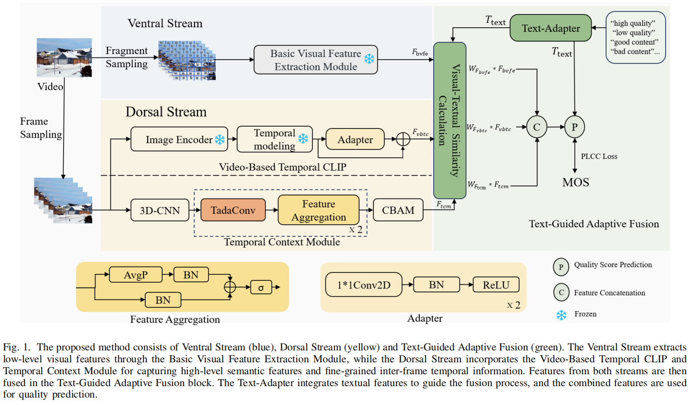
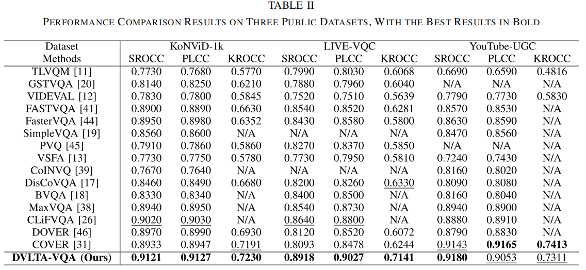
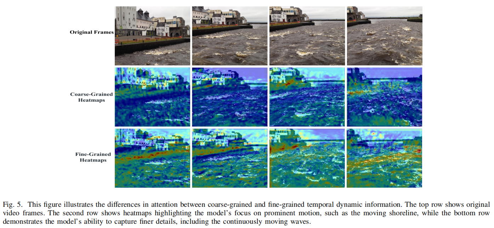

DVLTA-VQA: Decoupled Vision-Language Modeling With Text-Guided Adaptation for Blind Video Quality Assessment
IEEE Transactions on Circuits and Systems for Video Technology, 2026
Abstract
-
grade Inspired by the dual-stream (dorsal and ventral streams) theory of the human visual system (HVS), recent Video Quality Assessment (VQA) methods have integrated Contrastive Language-Image Pretraining (CLIP) to enhance semantic understanding. However, as CLIP is originally designed for images, it lacks the ability to adequately capture the temporal dynamics and motion perception (dorsal stream) inherent in videos. To address this limitation, we propose DVLTA-VQA (Decoupled Vision-Language Modeling with Text-Guided Adaptation), which decouples CLIP’s visual and textual components to better align with the NR-VQA pipeline. Specifically, we introduce a Video-Based Temporal CLIP module and a Temporal Context Module to explicitly model motion dynamics, effectively enhancing the dorsal stream representation. Complementing this, a Basic Visual Feature Extraction Module is employed to strengthen spatial detail analysis in the ventral stream. Furthermore, we propose a text-guided adaptive fusion strategy that leverages textual semantics to dynamically weight visual features, facilitating effective spatiotemporal integration. Extensive experiments on multiple public datasets demonstrate that the proposed method achieves state-of-the-art performance, significantly improving prediction accuracy and generalization capability.
Highlights
-
grade Decoupled CLIP-Based Framework: Inspired by the dual-stream theory, this paper proposes to decouple CLIP-visual and CLIP-textual to fit them into different stages of NR-VQA pipeline. The CLIP-Visual is used to extract high-level semantic features, while CLIP-Textual is used for dynamic and contextual guidance for feature fusion.
-
grade Video-Based Temporal CLIP and Temporal Context Module: To enhance motion perception in the dorsal stream, this paper proposes the Video-Based Temporal CLIP, extending the image-oriented CLIP framework with temporal modeling capability. Additionally, the Temporal Context Module further refines fine-grained inter-frame contextual representations, enabling a more detailed and accurate exploration of motion dynamics. These two modules work synergistically to enhance motion perception for video quality assessment.
-
grade Text-Guided Adaptive Fusion Strategy: By dynamically adjusting weights of features based on textual semantic information, the proposed text-guided adaptive fusion strategy derives more precise and effective fusion results.
Network Architecture

Results

Visualization

Citation
@article{yu2026dvlta,
title={DVLTA-VQA: Decoupled Vision-Language Modeling With Text-Guided Adaptation for Blind Video Quality Assessment},
author={Yu, Li and Wang, Situo and Zhou, Wei and Gabbouj, Moncef},
journal={IEEE Transactions on Circuits and Systems for Video Technology},
volume={36},
number={5},
pages={6826--6837},
year={2026},
doi={10.1109/TCSVT.2026.3657415}
}